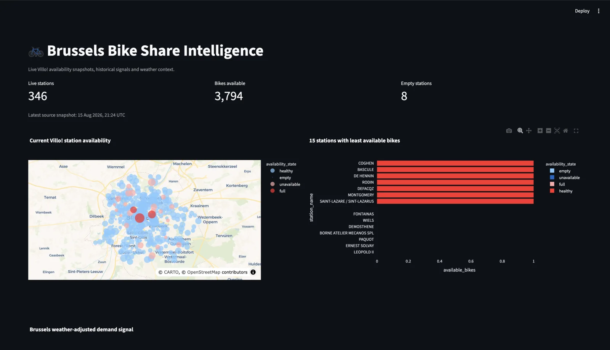

Brussels bike share, live, with the pipeline's own rules.
Every hour the pipeline pulls every Villo! station and a three-day forecast for five Belgian cities, refuses data that fails its quality gates, keeps an append-only history in PostgreSQL and models it with dbt. This page applies the same transforms to the live feeds, right now, in your browser.

Why it exists
A notebook that worked once is not a data product.
A one-off script calls two APIs, overwrites yesterday's numbers and silently accepts whatever comes back: a half-empty feed, a duplicate station or a stale timestamp ends up in the chart as if it were real.
Extraction retries with timeouts; quality gates fail the run loudly on too few stations, negative counts or duplicates; weather loads are idempotent and station snapshots append-only, so history builds up. dbt turns that into marts a dashboard can trust.
Try it · runs in your browser
Live from the same sources, transformed the same way
Fetched now from the public CityBikes and Open-Meteo APIs. Station states, occupancy and the demand score use the formulas in transform.py; the badges are the checks in quality.py, plus one data-quality observation the pipeline does not check yet.
The demand score is an explainable contextual proxy, not observed trip data. Nothing is stored: the real pipeline writes each snapshot to PostgreSQL to build a time series.
How it works
Extract, validate, load, model, show
Two public sources
Open-Meteo hourly forecasts for Antwerp, Brussels, Ghent, Leuven and Liège; CityBikes for every Villo! station in Brussels.
Quality gates that fail visibly
At least 100 stations, no negative counts, no duplicate snapshots and an optional staleness limit. A failing gate stops the load instead of polluting the warehouse.
History by design
Weather upserts are idempotent; station snapshots are append-only, so every run adds a real point in time.
dbt marts and a dashboard
Staging models, a latest-status mart and a daily demand mart feed the Streamlit map, KPIs and rankings.
The flow, step by step
Evidence
What is real, and what is not
REAL Built and verified
- Extraction from two live public APIs, transforms and quality gates with pytest coverage
- PostgreSQL loading, dbt models and a Streamlit dashboard, verified in a local Docker run
- CI with Ruff and pytest; an hourly scheduled workflow ready for a database secret
- The live panel on this page applies the same formulas to today's data
SIMULATED Mocked or not built yet
- The demand score is a transparent proxy, not observed bike trips
- No hosted warehouse: the scheduled workflow skips the load until a DATABASE_URL secret is set
- Station
last_updatedvalues carry no timezone; the pipeline currently reads them as UTC
Run it yourself
Run it locally
Requires Python 3.11+ and Docker Desktop. Both APIs are public; no keys needed.
git clone https://github.com/phlppgdfry/belgium-mobility-weather-etl.git
cd belgium-mobility-weather-etl
python3 scripts/setup_local_env.py
set -a; source .env; set +a
make up # PostgreSQL in Docker
make install
make run # extract → validate → load
make dashboard # Streamlit on http://localhost:8501
make test # pytest
# optional analytics layer: see README → dbt (dbt-postgres + profile)Go deeper